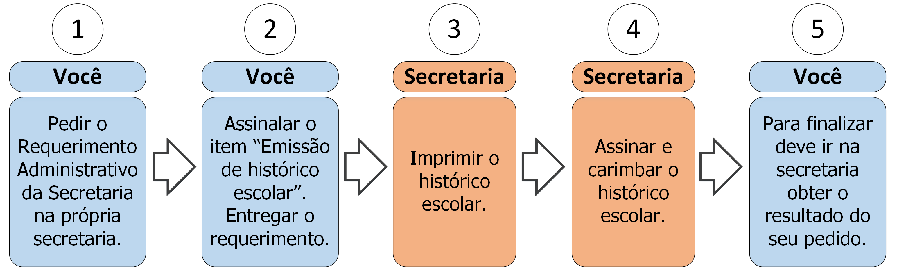

5. Emissão de histórico escolar

5.1 Descrição
A qualquer momento você pode requerer seu histórico escolar. Para isso deve seguir os seguintes passos:
- A. Peça o Requerimento Administrativo da Secretaria;
- B. Assinale o item “Emissão de histórico escolar”. Nele constará, por padrão, suas disciplinas já cursadas e a respectiva situação das mesmas e seu coeficiente de rendimento. Caso necessite outro tipo de histórico escolar especifique-o no campo Observação;
- C. Entregue o requerimento;
- D. A secretaria imprimirá o histórico escolar;
- E. A secretaria carimbará e assinará o histórico escolar;
- F. Vá à secretaria e procure saber sobre o resultado do seu requerimento (ver regra 1 na seção 5.3).
- Condição: Este processo deve ser utilizado apenas para necessidade de um histórico escolar assinado pela instituição. O histórico escolar está disponível via Internet no Portal do Aluno.
5.2 Documentos necessários
Nenhum.
5.3 Regras
- 1. Prazo de efetivação: A Secretaria e direção têm até 5 dias úteis para emitir o histórico escolar.